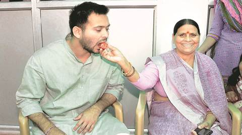
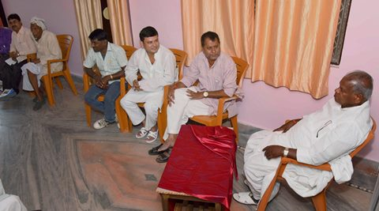
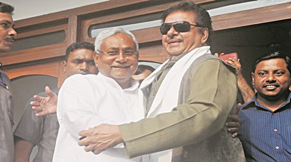

Nitish Kumar’s swearing-in after Diwali, RJD may seek Deputy CM post
Jitan Ram Manjhi blames beef, quota, Pak comments for NDA’s defeat in Bihar
Shatrughan Sinha talks of Bihari-Bahari, says ‘captain’ must take blameAmid the Grand Alliance’s victory in Bihar, the CPI(ML) won three seats. At the party’s two-storey headquarters in east Delhi’s Shakarpur, general secretary Dipankar Bhattacharya spoke to MANOJ C G about the victory and the challenges faced by the Left.
How do you look at the Bihar elections verdict?
It was more of a national election than a state election. In that context, this is a very strong anti- BJP verdict. I don’t agree with the view that this was a pro-Nitish and pro-incumbency verdict. Three things completely sealed this verdict. Firstly, Mohan Bhagwat and V K Singh’s remarks completely exposed BJP’s anti-Dalit mindset. Second was Dadri and the third was the autocracy and arrogance of the BJP. The campaign of the BJP, spearheaded by two leaders from Gujarat, worked against the BJP. The Bihari self-respect argument also worked. It was the most 1995-type of election — the first post-Mandal, post Babri election. There, too, was a reservation scare and in place of Babri, there was Dadri. The impact was more or less similar. The Lalu-Nitish tango worked well. Their campaign was smart, execution of strategies smarter and alliance compact.
How do you see it from the Left’s point of view? For the first time, six Left parties fought elections together.
From the Left point of view, had we started a little early and with a little more intent and energy, probably it could have been a more effective campaign…The unity effect was not that much. But still it was a good result for the Left… We got 4 per cent of the total vote share. Last time, CPI(ML) got out for a duck and the CPI had one seat… Had this been a little less national kind of an election… a normal election then the Left would have done better.
How difficult is it for the Left to make inroads where caste plays a dominant role?
That is a myth. People definitely have those identities and they do have strong affiliations. But if it was really just about caste affiliations then there would have been absolutely no space for the Left. That’s because every caste is booked by some party or leader. The only caste left was the Musahar, and Jitan Ram Manjhi formed a party. The fact that Manjhi is the lone winner from his party shows that this has been completely refuted. Caste is a factor, identity is very much there politically…but you can also look at it through the prism of dynamic class politics.
How will the Left unity play out in West Bengal where polls will be held next year?
Bengal is a different ball game because Left Front had been in power. What is crucial is that till now there has not been a single word of regret over Singur or Nandigram, and issues which concern the peasantry and which concern the erosion of the Left’s credibility…I don’t think there is any bypassing these issues.
So there will not be any alliance in Bengal?
Let us see how the Left, the CPM especially, responds as they should try and introspect why there has been no significant revival despite Mamata Banerjee facing quite a serious political crisis… The only explanation is that the Left’s credibility crisis is still a serious issue.
So it is not a given that the six Left parties will go together in Bengal as well?
No, no. It is not a given. We have made it very clear that in Bengal it is more of an issue-based kind of joint action. We are not part of the Left front. The unity in Bihar was Bihar specific.
The top leaders of the six parties are meeting Tuesday. What is on the agenda?
Primarily exchanging notes after Bihar results, and may be some loud thinking about the future course of action.